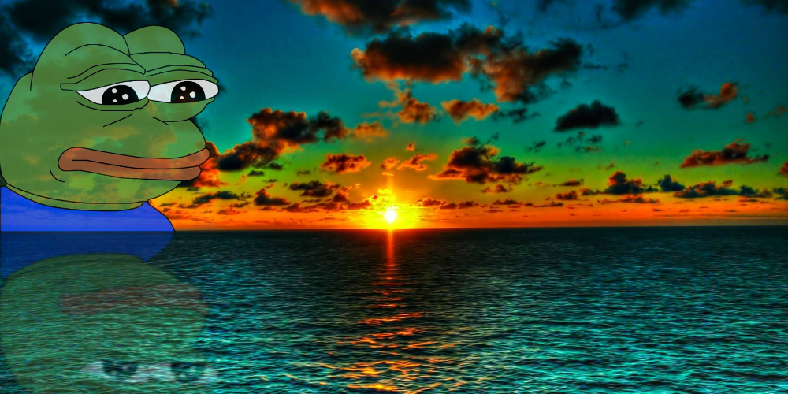

Доун
Сюжет:
Antípater de Sidón escribía así sobre el magnífico templo de Éfeso: «Cuando vi la sagrada morada de Artemisa, las otras maravillas quedaron en la sombra, porque el propio Sol nunca había visto nada igual fuera del Olimpo.
Hija de Zeus y hermana de Apolo, Artemisa (la Diana de los romanos) era una de las diosas más veneradas en la Antigua Grecia. En el siglo VI a. C., los habitantes de éfeso quisieron alzar en su honor el templo más grandioso de todos los tiempos. Para ello recurrieron al arquitecto Teodoro de Samos, que contaba con una excepcional reputación tras realizar el templo de Hera, conocido como el “laberinto de Samos” por su impresionante bosque de columnas. Elevado en el mismo lugar que un santuario anterior, también dedicado a la diosa, el Artemision medía 50 por 103 metros. Su nave central estaba descubierta y sus lados, circundados por dos filas de columnas: 20 en los laterales, nueve en la parte posterior y ocho en la entrada orientada hacia el Oeste.
La fama del templo se extendió por todo el mundo, merced a sus frisos y su bosque de columnas de 19 metros de altura donadas por Creso, el acaudalado rey de los lidios conquistador de éfeso en el 560 a. C. En la noche del 21 de julio del 356 a. C. Erostrato incendió el templo. Ese mismo día nació Alejandro El Magno quien 23 años después reconstruyó el templo. Peor suerte corrió cuando, ya en el 262 de nuestra era, los godos conquistaron éfeso y lo destruyeron. Más tarde, durante el lmperio bizantino, sus restos quedaron sepultados baje seis metros de barro tras la crecida del río Caistro.